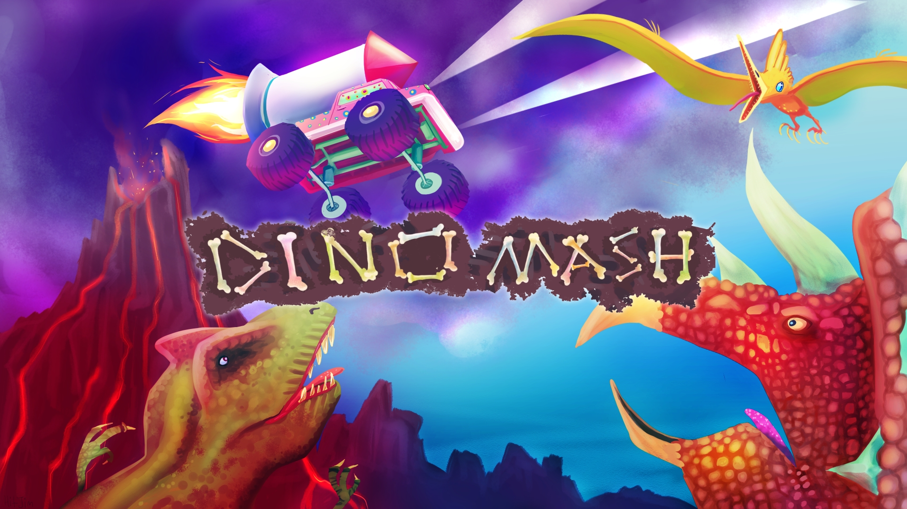
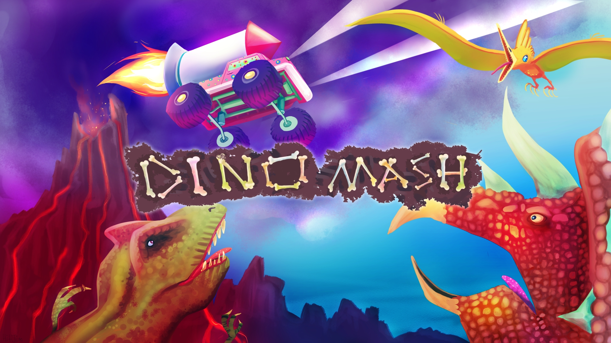
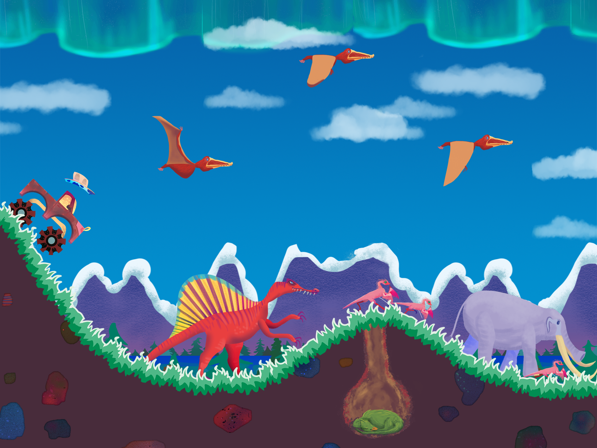
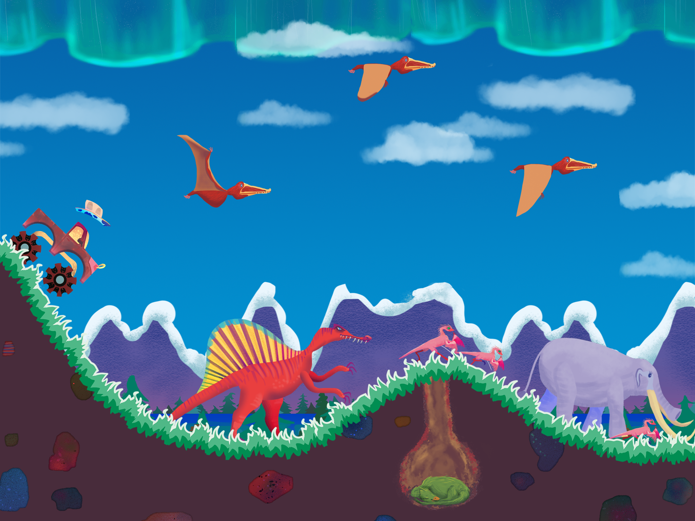
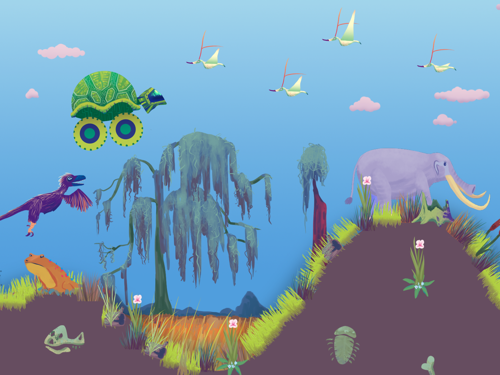
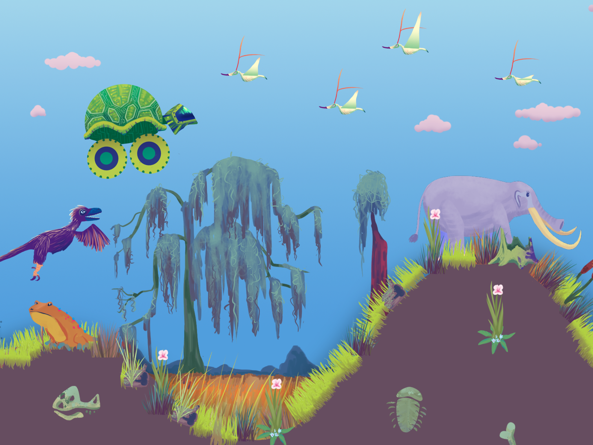

During a monster truck rally, a time warp occurred landing you back into Jurassic times. With no fuel, you must utilize the landscape to maintain speed. With the push and release of a single button, you can dive down hills and launch through the air. Bounce off of dinosaurs for extra speed, and keep moving with hopes of getting back to the future!
Features
Travel through five spectacular prehistoric environments
Collect various Trucks, all offering a unique feel to the game! A truck for every personality.
Gorgeous painterly artwork by Hailey McLaughlin with over 20 hand drawn dinosaurs.
Completely free to play with no imposing ads
Many more surprises! Play to find out (:
QUESTION & ANSWER
So What is DinoMash?
DinoMash is a casual mobile game full of goofy dinosaurs, monster trucks, and arcade-style fun! Similar to an endless runner, you attempt to get as far as possible each round. With the push of a single button, dive down hills to gain speed, and release it to catch air. With no fuel left, you must maintain speed by timing your dives downhill, or bouncing off dinosaurs. Are you lost among the dinosaurs, or is there a way back to the future?
Okay, Why is It Fun?
You're not just pushing accelerate to drive. With no fuel, you must "surf" the hills of five prehistroic landscapes. Movement in DinoMash is based on timing, resulting in an incredibly satisfying surfing mechanic that places your mind in a "flow" state. It is easy to get the hang of, but hard to master. New obstacles and dinosaurs will keep you on your toes!
The Mechanic Sounds Fun...But Why Keep Playing?
New dinosaurs and landscapes will keep you itching to improve in order to see what lies ahead. Want to play as a Fire Truck? Ice Cream Truck? How about a Turtle Tank? We got it all. Each truck offers a brand new experience by changing the "feel" of the truck, and consequently, the game mechanic. Got a highscore with the Cow Truck? It might not be so easy with the Pizza Truck. Earn a place on the high score board for every truck!
So is this Game Really Free?
Yes! We worked hard to make sure the game stays completely free, and additionally, doesn't trick or obstruct the player in any way. There are no obtrusive ads, as they only appear upon the players request. We decided to offer 30 unique ways to experience the game through our variety of trucks, and if the player wants a specific truck NOW, they can purchase it.Otherwise, you can keep playing the game with the hopes of earning the Truck of your dreams. But please, don't hesitate to support us!
Design: Kurt Waldowski, Arjun Singh
Programming: Kurt Waldowski
Art: Hailey McLaughlin
Sound & Music: Joe Schlamme
Website & Social Media: Kurt Waldowski
 ICON BANNER (1920x1080)
ICON BANNER (1920x1080)
 PROMO BANNER (1920x1080)

SCREENSHOTS (1280x720)
PROMO BANNER (1920x1080)

SCREENSHOTS (1280x720)
 

 
